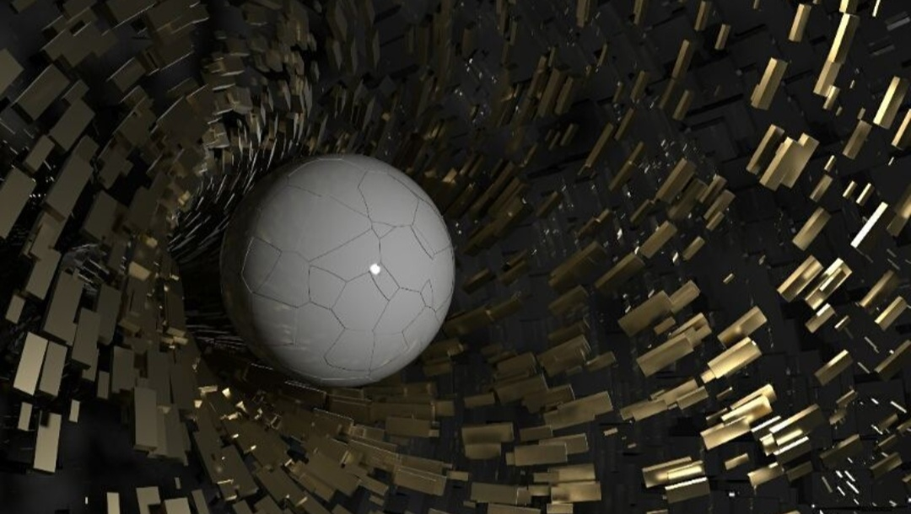
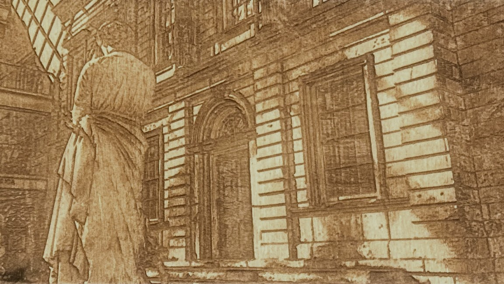

I'm a PhD student in Computer Science at UNC Chapel Hill, advised by Dan Szafir. I study how computers represent 3D environments—both real and virtual—to enable immersive experiences on an ordinary computer screen. My focus is the human experience: enhancing how users perceive digital scenes so they can remain present for the people and situations that matter most.
I currently work in IRON Labs, where I'm building vision-driven reconstruction and teleoperation systems with a Boston Dynamics SPOT quadruped for search-and-rescue scenarios. Previously, I worked under Henry Fuchs in the Visual Computing & Augmented Intelligence Lab designing AR glasses for spatial audio filtering, and in the Graphics & Virtual Reality Group on desktop telepresence using novel view synthesis targeting dynamic speakers.
A high-quality view synthesis method using commodity RGBD cameras for desktop telepresence. Introduces Multi-Layer Point Cloud (MPC) representation with a temporally-aware neural renderer and Spatial Skip Connections for real-time novel view synthesis.
Research
Real-Time Robotic Teleoperation & Neural Scene Reconstruction IRON Labs, UNC Chapel Hill — Ongoing
Designing a system and conceptual framework to deploy and evaluate neural scene reconstruction in robotic teleoperation. This research examines how reconstruction fidelity and quality impact human decision-making in time-sensitive tasks across remote or inhospitable environments. Working toward a real-time task-dispatch framework to coordinate distributed imaging workloads under environmental constraints. Deployed on a Boston Dynamics SPOT quadruped, with vision-analysis pipelines to assess render quality, reconstruction error, and object saliency.
Contributed to a real-time view synthesis system for autostereoscopic desktop telepresence using sparse commodity RGBD cameras, turning a video call into a window to remote locations for immersive communication. The system constructs a Multi-Layer Point Cloud representation and renders novel viewpoints through a temporally-aware neural renderer with Spatial Skip Connections. Published in IEEE TVCG 2025.
Tools: PyTorch, CUDA, Azure Kinect, Open3D
Prototype Audio-Visual AR Glasses Visual Computing & Augmented Intelligence Lab, UNC Chapel Hill — 2023–2024
Led development on prototype AR glasses designed to help users hear in crowded environments by isolating specific speakers based on their spatial location. Integrates computer vision and adaptive beamforming to filter and enhance target audio in real time. Designed a novel spatial audio filtering method on a custom hardware platform with a linear microphone array. Ongoing work in visual localization and object recognition for gaze-directed audio focus.
Personal Projects
Parallax — Desktop VR Engine Personal Project — 2025
A real-time rendering system to simulate depth on a standard flat display. Webcam-based face tracking drives off-axis perspective projection, updating the camera pose and lighting based on viewer position and window location. The result is a dynamic parallax illusion with two modes: “diorama mode” to visualize a recessed miniature scene on screen and “pane mode” to make the screen act as a window into a larger virtual scene.
Monocular Depth Estimation Personal Project — 2024
A deep learning pipeline for predicting dense per-pixel depth maps from single RGB images. A ResNet-34 U-Net encoder-decoder with bottleneck self-attention is trained through a 3-stage refinement process that stacks loss functions on a composite base loss (depth MSE, gradient matching, sharpness, fidelity, smoothness). Then the frozen backbone undergoes edge refinement with superpixel consistency and pixel-level polish via skip connections with losses on normals, latent RGB features, and edge sharpening. Includes a convergence dashboard with ablation tests on NYU Depth V2 and additional tests with Apple Hypersim synthetic scenes and personal Blender-generated datasets. Best variant: 0.154 abs_rel and 0.784 δ₁ accuracy.
A real-time GPU ray tracer that supports Phong shading with shadow rays, specular reflections, ambient occlusion, and one-bounce Monte Carlo global illumination with progressive frame accumulation for color bleeding and soft lighting. BVH structure for accelerated traversal, OBJ mesh loading, antialiasing (FXAA, SSAA), and an interactive PyQt5 viewer that supports orbit and first-person camera controls, per-light HSV color editing, and keyframed camera animations. Also supports export to Looking Glass Factory quilt format.
Built a custom 32-bit MIPS processor from scratch in SystemVerilog, including the ALU, register file, datapath, control unit, and peripheral drivers. As a final application, designed a real-time 3D point cloud renderer entirely in MIPS assembly language and deployed it on a Nexys FPGA.
The renderer loads a simplified Stanford bunny model and performs vertex transformations and orthographic projection using fixed-point multiplication directly on the processor. Camera orientation is driven by accelerometer tilt, and the resulting image is written to a 40×30 screen buffer for display output.
Graduate Researcher (Doctoral) IRON Labs, UNC Chapel Hill — Jan. 2025–Present
Leading development of a robotic teleoperation and perception pipeline for search-and-rescue scenarios, integrating computer vision, neural scene reconstruction, and image analysis on a Boston Dynamics SPOT quadruped. Designing and evaluating learning-based scene representations for visual inspection, remote navigation, and error detection.
Research in audio processing systems and computational perception for AR use cases, focused on isolating individual speakers in noisy environments using spatial audio filtering. Designed and prototyped custom AR glasses hardware integrating microphone arrays and real-time DSP pipelines.
Contributed to neural rendering research for high-speed telepresence using few-camera, consumer-friendly RGBD setups under Henry Fuchs. Assisted with dataset preparation, baseline implementation, and experimental evaluation; co-authored an IEEE TVCG paper on accessible neural telepresence systems.
Software Engineering Intern
Ford Motor Company (Remote) — May 2022–Aug. 2022
Developed and maintained components for a data-driven vehicle recommendation platform. Implemented backend services, frontend interfaces, and database solutions using Java, JavaScript, SQL, and Vue.js. Worked within CI/CD pipelines and code-quality frameworks.
Education
Ph.D. in Computer Science
University of North Carolina at Chapel Hill — Aug. 2023–Expected May 2028
Advisor: Dr. Daniel Szafir
Focus: Human–robot interaction, neural rendering, robotics.
M.S. in Computer Science
University of North Carolina at Chapel Hill — Aug. 2023–Dec. 2024
B.S. in Computer Science & Communication Studies
University of North Carolina at Chapel Hill — Aug. 2019–May 2023
GPA: 3.92 / 4.0 | Phi Beta Kappa | Honors Carolina | Highest Distinction | Dean's List
Concentration in Media and Technology Studies | Minor in Data Science
Teaching
Teaching Assistant — COMP 992 Master's Writing Advisory Spring 2026
University of North Carolina at Chapel Hill
Graduate Teaching Assistant — COMP 380/380H Technology, Ethics, & Culture
University of North Carolina at Chapel Hill — Aug. 2024–Present (~4 semesters)
Undergraduate Learning Assistant — COMP 283 Discrete Structures
University of North Carolina at Chapel Hill — Fall 2020
Honors & Awards
Rising Star Scholarship — VFX & CGI SCAD, 2018
NC Fellow UNC Chapel Hill, 2020–Present
Phi Beta Kappa UNC Chapel Hill, 2023
National Merit Scholar 2019
Design & Fabrication
With 14 years of Blender and 10 years of Illustrator experience, I enjoy exploring the creative side of representing the world with multimedia design at the intersection of art and technology.

Particle simulations and material shading in Blender

Photography, computational filtering, and laser etching


{kind=link}